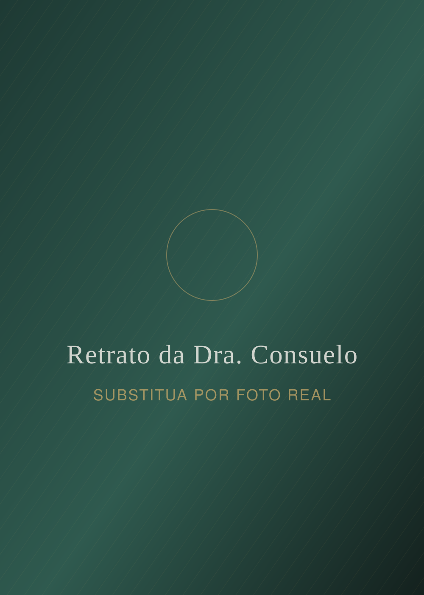
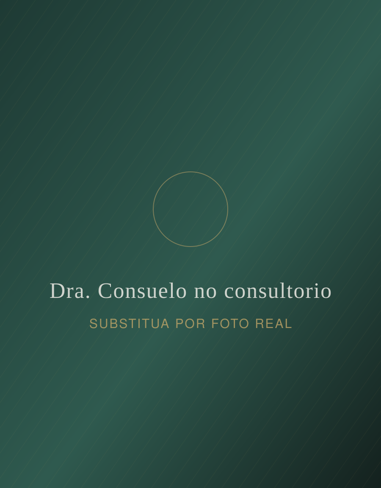
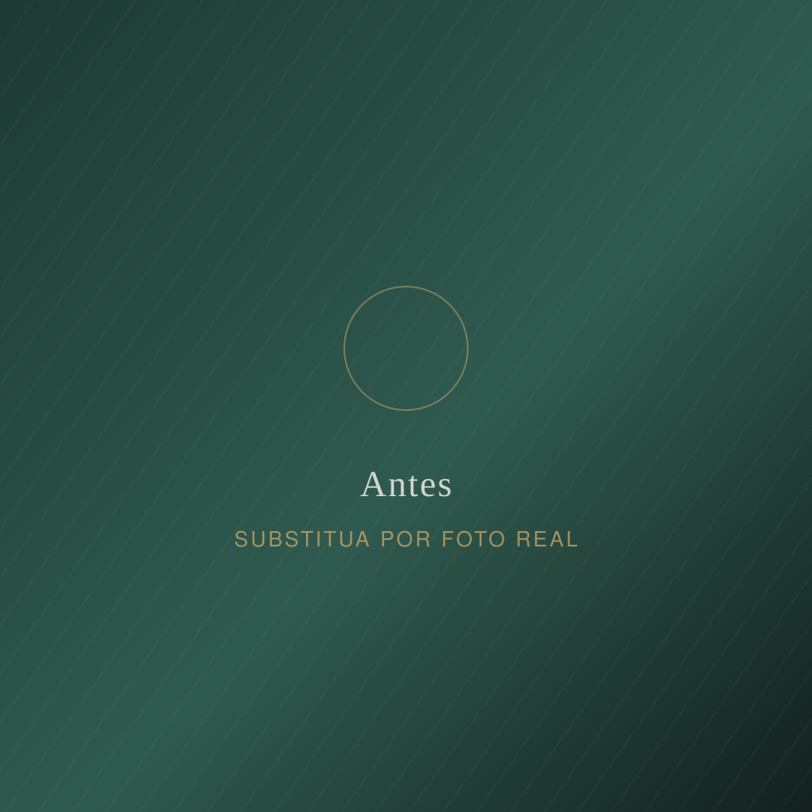
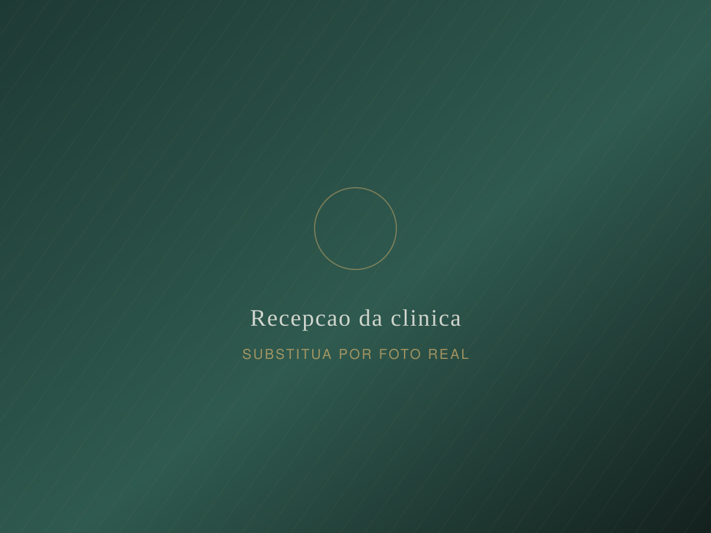
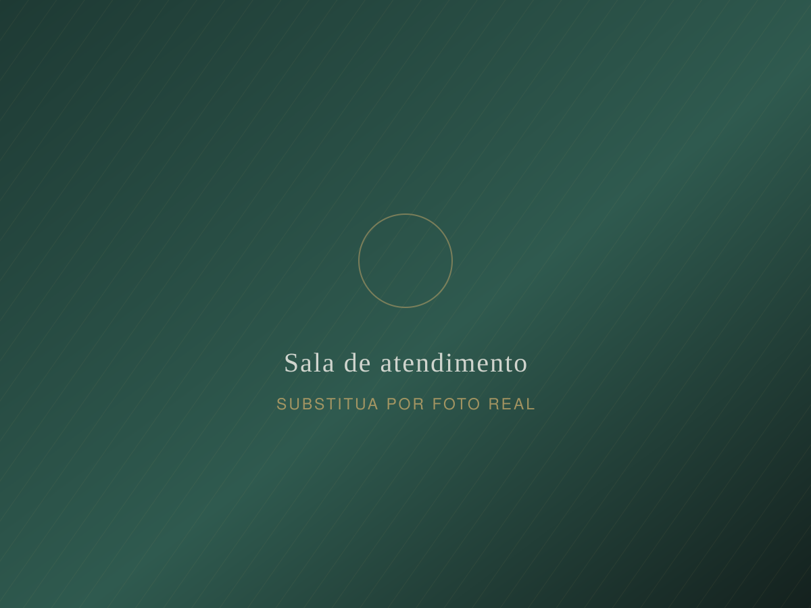
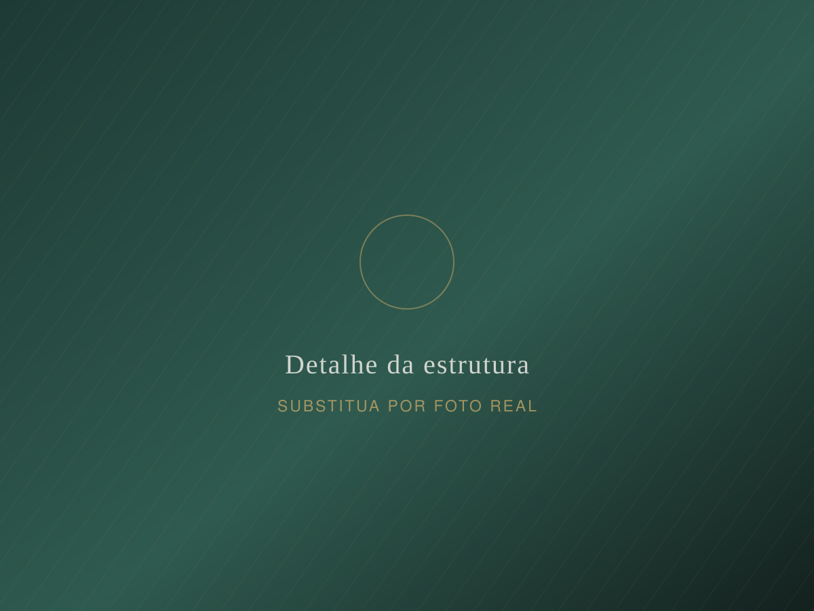

Lentes de contato dental
Laminados ultrafinos para corrigir forma, cor e proporção com desgaste mínimo — ou nenhum.
- Simulação prévia
- Mock-up na boca
- 2 a 4 sessões
CRO-XX 00000
Odontologia estética e harmonização orofacial com diagnóstico detalhado, planejamento digital e resultados que respeitam a sua face — nunca o contrário.


Sobre a Dra. Consuelo
Eu comecei a atender com uma convicção simples: nenhum sorriso bonito nasce de um procedimento isolado. Ele nasce de um diagnóstico honesto, de um plano bem construído e de uma execução paciente. É por isso que a primeira consulta no meu consultório não é uma venda — é uma investigação.
Trabalho com odontologia estética e harmonização orofacial de forma integrada, analisando proporção facial, oclusão, saúde gengival e expectativa da paciente antes de qualquer intervenção. O resultado que busco é aquele que ninguém consegue apontar: as pessoas percebem que você está diferente, mas não conseguem dizer o que mudou.
Tratamentos
Cada indicação abaixo depende de avaliação presencial. Nenhum tratamento serve para todo mundo, e parte do meu trabalho é dizer quando não fazer.
Laminados ultrafinos para corrigir forma, cor e proporção com desgaste mínimo — ou nenhum.
Alternativa conservadora e reversível, feita em consultório, ideal para quem quer testar o resultado.
Protocolo supervisionado, com controle de sensibilidade e manutenção orientada.
Toxina botulínica, preenchedores e bioestimuladores com leitura facial completa e dose conservadora.
Correção do contorno gengival para equilibrar o sorriso gengival e a proporção dos dentes.
Devolver função e estética em casos de perda dentária, com prótese planejada desde o início.
Resultados variam de pessoa para pessoa. Esta página tem caráter informativo e não substitui a consulta odontológica.
Como funciona
Do primeiro contato à manutenção, você sabe exatamente em que ponto está, quanto tempo falta e quanto vai custar.
Começar pela avaliaçãoUma hora dedicada a entender o seu caso: fotos, exame clínico, análise facial e da oclusão, e — principalmente — o que você espera do resultado.
Você recebe o plano por escrito com etapas, prazos e valores, e vê a simulação digital do resultado. Nada começa antes de você aprovar.
Sessões por hora marcada, sem sobreposição de agenda. Ajustes finos são feitos com você acordada e opinando, com espelho na mão.
Retornos programados em 15 dias, 6 meses e 1 ano, com orientação de higiene, placa de proteção quando indicada e reavaliação do resultado.
Resultados
Casos reais, com autorização de uso de imagem. Cada resultado é individual e depende das condições clínicas de cada paciente.

Lentes de contato dental + clareamento — 3 sessões. Imagem ilustrativa: substitua por um caso real com termo de autorização assinado.
Depoimentos
Eu tinha medo de ficar com aquele sorriso artificial. A Dra. Consuelo passou uma hora inteira me explicando o que não valia a pena fazer no meu caso. Saí com o resultado que eu queria e com a sensação de que fui ouvida.
Fiz harmonização com ela depois de uma experiência ruim em outro lugar. A diferença foi o planejamento: ela me mostrou exatamente o que ia fazer, quanto ia usar e por quê. Resultado natural, ninguém percebeu o procedimento.
O que mais me marcou foi a organização. Recebi o plano por escrito, com prazo e valor, e tudo aconteceu exatamente como estava combinado. Zero surpresa.
Sou ansiosa com dentista desde criança. É a primeira vez que consigo ir a uma consulta sem passar a noite anterior acordada. Todo o time é muito cuidadoso.
A clínica
Biossegurança rigorosa, equipamentos próprios de imagem e uma sala por vez — para que o seu horário seja realmente o seu horário.



Dúvidas frequentes
Não achou a sua pergunta? Me chame no WhatsApp — quem responde é a equipe do consultório, não um robô.
Falar no WhatsAppO valor só existe depois do diagnóstico, porque depende do número de dentes envolvidos, da técnica indicada e da necessidade de tratamentos prévios. Na avaliação você recebe o plano por escrito, com etapas, prazos e valor fechado — sem cobrança de surpresa depois.
Quando bem indicadas e bem executadas, não. O desgaste é mínimo e, em alguns casos, inexistente. O problema aparece quando a técnica é indicada para um caso que pedia ortodontia, clareamento ou tratamento gengival antes. Por isso o diagnóstico vem primeiro.
Rosto artificial é resultado de excesso e de falta de leitura facial, não da técnica. Trabalho com doses conservadoras, em etapas, e com retorno em 15 dias para ajuste fino. Prefiro fazer a menos e complementar depois.
Depende do procedimento e, principalmente, da manutenção. Laminados cerâmicos bem cuidados duram muitos anos; preenchedores e toxina têm duração previsível e precisam de reaplicação. Tudo isso é dito antes, não depois.
O atendimento é particular, com opções de parcelamento. Para procedimentos com cobertura, emitimos a documentação necessária para você solicitar reembolso ao seu plano.
Dá, e é mais comum do que você imagina. Trabalhamos com consulta de dessensibilização, anestesia com técnica confortável e sessões mais curtas quando necessário. Avise na hora de agendar para separarmos um horário adequado.
Agendamento
É nela que a gente descobre se eu sou a profissional certa para o seu caso. Se não for, eu digo — e indico quem for.
Preencha e a mensagem abre pronta no seu WhatsApp — você só aperta enviar.